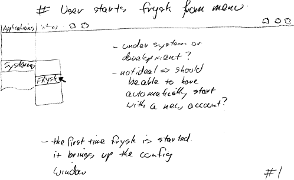
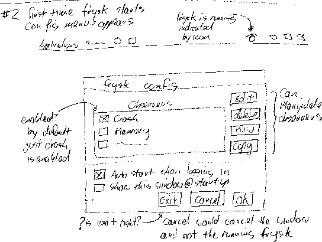
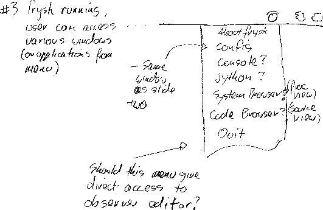
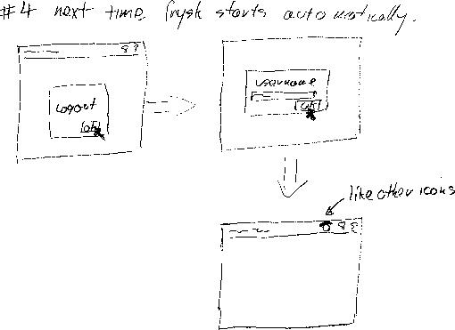

Frysk

- Where should frysk's menu entry fall? Applications =>
Programming; or Applications => System Tools?
- In an ideal world, frysk would be set up as part of the
user's (or system profile). The world is not ideal.

- The very first time frysk is started, the user is
initially presented with the configuration menu.
- By default the crash observer is enabled; the user can of course
enable other observers.
- Also the user gets to specify that frysk is always
automatically started when the user logs in (Is this user-interface
correct?).

- In its default mode, frysk appears in the egg-tray, just
like any other running application.
- The user accesses frysk using the menu.

- If so configured, frysk starts automatically when ever
the user logs in (the login possibly being automatic).